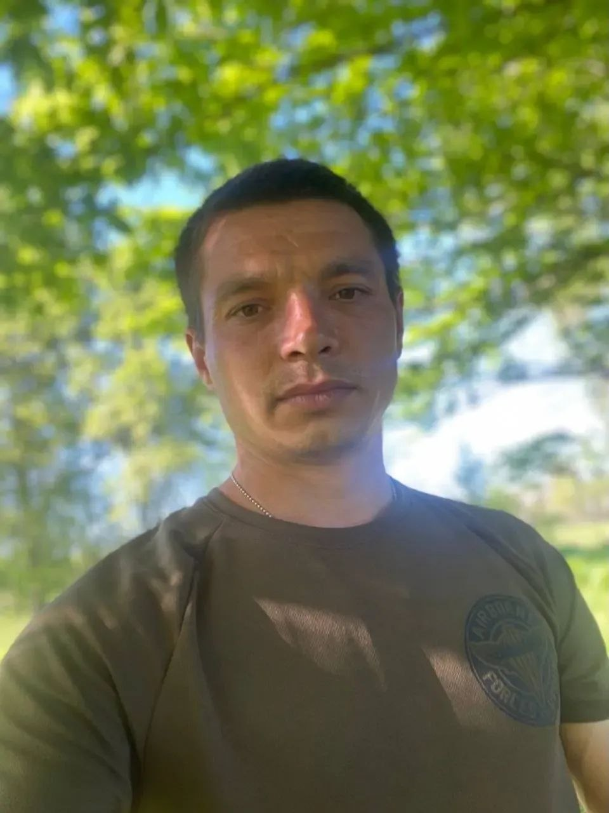

🕯️
Заторський Руслан Олександрович
Військовослужбовець ЗСУ
Пам'ять про Героя
Заторський Руслан Олександрович — мужній Захисник України, житель Присиваської громади, який став на захист рідної землі та суверенітету нашої держави.
Перебуваючи у російському полоні, Руслан до останнього подиху залишався вірним військовій присязі, своїй Батьківщині та українському народові. Його життя трагічно обірвалося у ворожій неволі.
Світлий спомин про незламного Захисника назавжди залишиться в серцях земляків, а його подвиг буде вічним прикладом мужності та самопожертви. Вічна пам'ять і шана Герою!